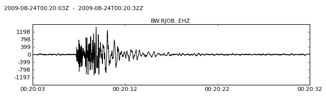
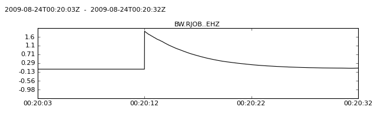

Runs a triggering algorithm on the data of the current trace.
| Parameters: |
|
|---|
Note
This operation is performed in place on the actual data arrays. The raw data is not accessible anymore afterwards. To keep your original data, use copy() to create a copy of your trace object. This also makes an entry with information on the applied processing in stats.processing of this trace.
Supported Trigger
Example
>>> from obspy import read
>>> st = read()
>>> tr = st[0]
>>> tr.filter("highpass", freq=1.0)
>>> tr.plot()
>>> tr.trigger("recstalta", sta=3, lta=10)
>>> tr.plot()

